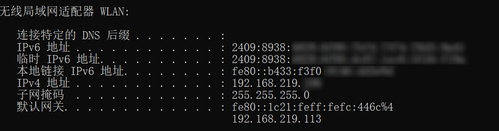
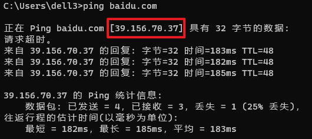
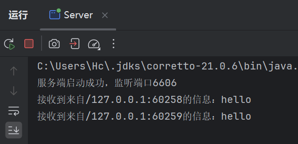
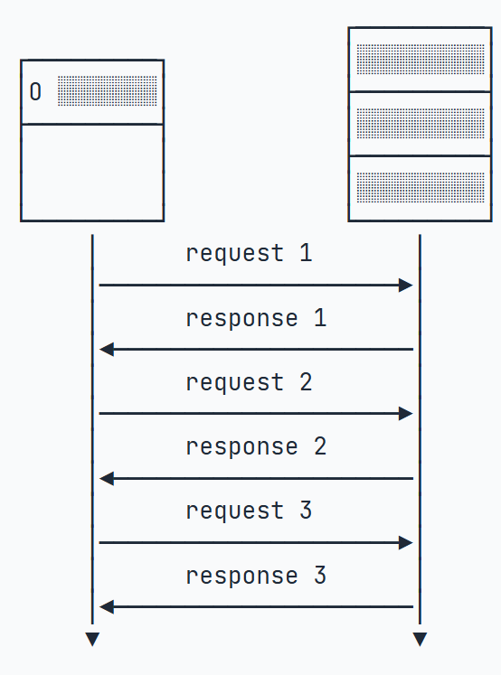
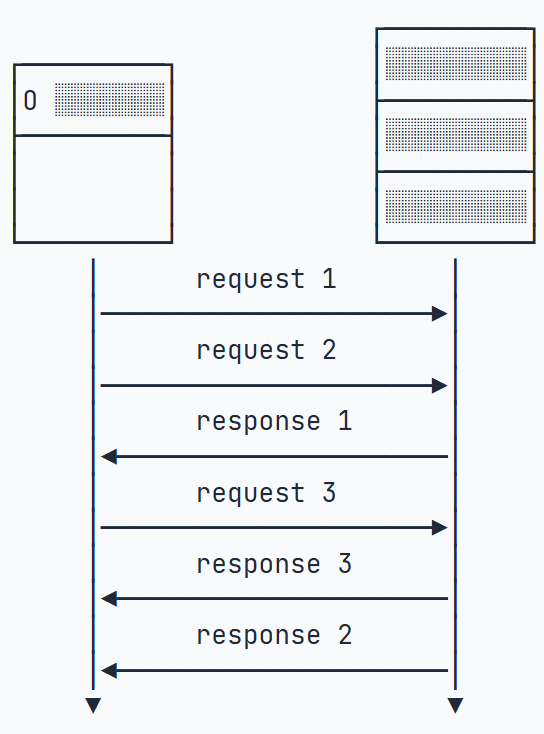

Java学习笔记（十五）：网络编程
声明：本篇笔记部分摘自《Java核心技术（卷Ⅰ） - 机械工业出版社》及Java教程-廖雪峰-2025-06-16，遵循CC BY 4.0协议。
存在由AI生成的小部分内容，仅供参考，请仔细甄别可能存在的错误。
一、网络编程基础
在进行简单的应用开发时，我们或许能在本地完成所有的任务。但是当我们需要实现用户之间的交互（实时排行榜、即时聊天等），或者需要对用户进行管理（账户系统、消息推送等），我们就需要实现能够通过计算机网络通信的程序了，即我们需要实现网络编程。
在同一个网络中，如果两台设备使用的是同一种协议，那么它们就可以相互通信。很多个小网络组成的大网络，即“网络的网络”，就是所谓的互联网。想要联入互联网与广泛的计算机设备通信交流，需要使用TCP/IP协议。
1.IP地址与基本网络知识
在互联网中，一个IP地址用于唯一标识一个网络接口（Network Interface）。一台联入互联网的计算机必须要有一个IP地址，也可能有多个IP地址。
IP地址分为IPv4和IPv6两种。IPv4采用32位地址，类似101.202.99.12，而IPv6采用128位地址，类似2001:0DA8:100A:0000:0000:1020:F2F3:1428。IPv4地址总共有232个（大约42亿），而IPv6地址则总共有2128个（大约340万亿亿亿亿），IPv4的地址目前几乎耗尽，而IPv6的地址数量很多，可以保障一段时间内的网络设备的分配。
IP地址又分为公网IP地址和内网IP地址。公网IP地址可以直接被访问，内网IP地址只能在内网访问。内网IP地址类似于：
- 192.168.x.x
- 10.x.x.x
有一个特殊的IP地址，称之为本机地址，它总是127.0.0.1。
如果一台计算机只有一个网卡，并且接入了网络，那么，它有一个本机地址127.0.0.1，还有一个IP地址，例如101.202.99.12，可以通过这个IP地址接入网络。
要判断两台计算机是否在同一网络，只需要判断它们的网络号是否相同：
1 | |
例如，某台计算机的IP是101.202.99.2，子网掩码是255.255.255.0，那么该计算机的网络号是101.202.99.2 & 255.255.255.0 = 101.202.99.0。如果计算得出另一台计算机的网络号与之相同，那么这两台计算机可以直接通过网线通信；如果不同，就需要路由器或者交换机（称之为网关）来间接通信。网关的作用就是连接多个网络，负责把来自一个网络的数据包发到另一个网络，这个过程叫路由。
一台计算机的一个网卡会有3个关键配置：
- IP地址
- 子网掩码
- 网关IP
在CMD中，执行命令ipconfig可以查询到详细的网络配置信息：

2.域名
直接记忆和输入域名访问网站比较麻烦，我们通常使用www.xxxx.com或www.xxxx.cn这样的一串字符，即域名来访问网站。当我们在浏览器中输入域名时，域名服务器（DNS, Domain Name Server）会将域名转换成对应的ip地址返回给路由器，然后路由器再通过这个ip地址访问对应的服务器。
想要通过域名知道服务器的ip，只需要ping一下就可以了：

本机域名为localhost，它对应的IPv4地址是127.0.0.1,IPv6地址是::1。
3.网络模型
计算机网络模型采用了分层模型，每一层负责处理自己的操作。由ISO组织定义的标准计算机互联模型OSI将网络划分成了下面六个层次：
- 应用层：提供应用程序之间的通信；
- 表示层：处理数据格式，加解密等等；
- 会话层：负责建立和维护会话；
- 传输层：负责提供端到端的可靠传输；
- 网络层：负责根据目标地址选择路由来传输数据；
- 链路层和物理层：负责把数据进行分片并且真正通过物理网络传输，例如，无线网、光纤等。
互联网实际使用的TCP/IP协议大致对应了上面的5层模型，分别是应用层、传输层、IP层、网络接口层。
4.常用协议
IP、TCP、UDP这三种网络协议都是互联网的核心协议，分属于TCP/IP 协议族的不同层级，职责分工明确，共同支撑数据在网络中的传输。
① IP 协议（Internet Protocol，网际协议）
- 层级：网络层（负责 “找路”）
- 核心作用：给数据包分配 “目标地址”（IP 地址），并通过路由器将数据包从 “源设备” 转发到 “目标设备”，是实现跨网络通信的基础。
- 关键特点：
- 无连接：发送数据前不与目标设备建立连接，直接发送；
- 不可靠：不保证数据包一定送达、不保证顺序（可能丢包、乱序），也不检查数据完整性；
- 面向数据包：以 “IP 数据包” 为单位传输数据。
- 类比：类似快递的 “地址单”—— 只负责标注收件地址，确保包裹被送到正确的城市 / 小区，但不保证包裹不丢失、不损坏，也不管包裹送达顺序。
② TCP 协议（Transmission Control Protocol，传输控制协议）
- 层级：传输层（负责 “可靠传输”）
- 核心作用：在 IP 协议的基础上，为应用程序（如浏览器、微信）提供可靠、有序、双向的数据传输服务，解决 IP 协议 “不可靠” 的问题。
- 关键特点：
- 面向连接：传输前需通过 “三次握手” 建立连接（类似打电话时 “喂 -> 请讲 -> 好的” 确认），传输后通过 “四次挥手” 断开连接；
- 可靠传输：通过 “确认机制”（收到数据后回复 “已收到”）、“重传机制”（丢包后重新发送）、“流量控制”（避免发送过快导致接收方拥堵）、“拥塞控制”（避免网络整体拥堵），确保数据不丢、不重、有序；
- 面向字节流：将应用数据拆分为字节流，按序传输，接收方再重组。
- 适用场景：对可靠性要求高的场景，如网页浏览（HTTP/HTTPS）、文件下载（FTP）、即时通讯的消息发送、邮件传输（SMTP）等。
③ UDP 协议（User Datagram Protocol，用户数据报协议）
- 层级：传输层（负责 “快速传输”）
- 核心作用：在 IP 协议基础上，以 “最快速度” 传输数据，不保证可靠性，追求低延迟。
- 关键特点：
- 无连接：无需建立 / 断开连接，直接发送数据，效率高；
- 不可靠：不确认、不重传、不保证顺序，丢包风险高；
- 面向数据报：数据以 “UDP 数据报” 为单位，直接发送，头部简单（仅 8 字节），开销小、速度快。
- 适用场景：对延迟敏感、可接受少量丢包的场景，如视频通话（Zoom）、直播、游戏、实时语音（微信语音）、DNS 域名解析等。
下表是这三者的简单对比：
| 协议 | 层级 | 核心能力 | 可靠性 | 速度 | 典型应用 |
|---|---|---|---|---|---|
| IP | 网络层 | 跨网络 “找路”（地址转发） | 低 | 中等 | 所有互联网数据的基础转发 |
| TCP | 传输层 | 可靠、有序传输 | 高 | 中等 | 网页、文件下载、消息 |
| UDP | 传输层 | 快速、低延迟传输 | 低 | 高 | 视频通话、游戏、直播 |
5.Socket套接字
Socket（套接字）是实现网络中不同设备间进程通信的技术 / 编程接口，是 TCP/IP 协议族在应用层的 “桥梁”—— 它封装了底层 TCP/UDP、IP 协议的复杂细节，让开发者无需直接操作协议栈，就能轻松编写客户端与服务器的通信代码。
核心本质：“通信的端点”
可以把 Socket 理解为网络通信中的 “电话”：
- 两台设备（如手机和微信服务器）要通信，需各自创建一个 Socket 作为 “通信端点”；
- 客户端通过自己的 Socket，向服务器的 Socket 发起连接 / 发送数据；
- 服务器通过自己的 Socket，接收连接 / 数据，再回传响应。
一个应用程序通过一个Socket来建立一个远程连接，而Socket内部通过TCP/IP协议把数据传输到网络：
1 | |
仅仅通过IP地址进行通信是不够的，同一台计算机同一时间会运行多个网络应用程序，例如浏览器、QQ、邮件客户端等。当操作系统接收到一个数据包的时候，如果只有IP地址，它没法判断应该发给哪个应用程序，所以，操作系统抽象出Socket接口，每个应用程序需要各自对应到不同的Socket，数据包才能根据Socket正确地发到对应的应用程序。
Socket由IP地址和端口号（范围是0～65535）组成，可以把Socket简单理解为IP地址加端口号。端口号总是由操作系统分配，它是一个0～65535之间的数字，其中，小于1024的端口属于特权端口，需要管理员权限，大于1024的端口可以由任意用户的应用程序打开。
使用Socket进行网络编程时，本质上就是两个进程之间的网络通信。其中一个进程必须充当服务器端，它会主动监听某个指定的端口，另一个进程必须充当客户端，它必须主动连接服务器的IP地址和指定端口，如果连接成功，服务器端和客户端就成功地建立了连接，双方后续就可以随时发送和接收数据。
因此，当Socket连接成功地在服务器端和客户端之间建立后：
- 对服务器端来说，它的Socket是服务器IP地址和指定的端口号；
- 对客户端来说，它的Socket是用户计算机的IP地址和一个由操作系统分配的随机端口号。
二、TCP编程
1.服务器端编程
TCP编程，顾名思义是编写基于TCP协议实现的网络程序。Java标准库提供了ServerSocket来实现监听指定IP的指定端口。通过ServerSocket ss = new ServerSocket(端口号)来监听计算机上所有网络接口的指定端口；若监听成功则通过无限循环来处理客户端的连接：
1 | |
代码ss.accept()表示每当有新的客户端连接进来后，就返回一个Socket实例，这个Socket实例就是用来和刚连接的客户端进行通信的。由于客户端很多，要实现并发处理，我们就必须为每个新的Socket创建一个新线程来处理，这样，主线程的作用就是接收新的连接，每当收到新连接后，就创建一个新线程进行处理,具体的处理逻辑写在子线程的run()方法中。这里也可以使用线程池来提高处理效率：
1 | |
如果没有客户端连接进来，accept()方法会阻塞并一直等待。如果有多个客户端同时连接进来，ServerSocket会把连接扔到队列里，然后一个一个处理。对于Java程序而言，只需要通过循环不断调用accept()就可以获取新的连接。
由于TCP是一种基于流的协议，建立对客户端的连接后，我们需要使用Socket流来处理数据的输入输出，这与C++的IO stream流类似，只不过输入和输出的目标是客户端而不是控制台了：
1 | |
根据上面的分析，我们可以写出一个比较完整的TCP程序，实现监听localhost:6606并且输出用户端输入的内容：
1 | |
2.调试ICP程序
为了调试ICP程序，我们需要模拟客户端与服务器建立连接并试图通信。这里记录两种调试方法：
① 使用CMD中的telnet调试
CMD自带的telnet.exe是一个“极简版”的TCP调试工具，可以很方便地发起TCP连接和简单通信，初次使用需要在控制面板中开启相关服务：

然后启动cmd，执行下面的命令：
1 | |
这样就是telnet的运行与退出操作了。要连接localhost的6606端口，执行命令telnet localhost 6606即可：
1 | |
报告连接失败的原因是我们还没有启动服务器程序。在Intellij IDEA中运行上面的服务器端程序，可以看到这样的输出内容：
1 | |
然后我们再执行命令telnet localhost 6606，CMD的标签名变成Telnet localhost，同时IDEA控制台提示客户端连接成功的信息，表示TCP连接成功建立。

超过十秒钟没有操作，服务器端会自动断开连接：

重新执行命令telnet localhost 6606建立与服务器的连接，并且在命令行（现在变成了“客户端”）输入一些字符（如“Hello TCP！”）后按回车键，可以看到IDEA（服务器端）的控制台中输出了对应的内容Hello TCP!，同时客户端接收到服务器传来的响应信息Server:Receive data OK!：

我们也可以测试使用线程池的情况下，服务端程序的并行处理能力，同时启动多个cmd窗口并且都通过telnet进行连接,然后发送一些消息：

可以看到服务端确实是成功同时建立了3个连接，并且都实时接收了输入的信息并且及时返回了响应。
② 使用Apifox调试
Apifox的标语是“API 设计、开发、测试一体化协作平台”，是一款综合Postman、Swagger、Mock以及JMeter等软件功能的国产工具，一站式解决 API 设计、调试、Mock、自动化测试和文档分享中的主要工作，面向个人/小团队免费开放使用。点击查看官网
安装并登录Apifox后，我们先运行服务端的程序，开启对6606端口的监听；然后操作Apifox连接6606端口并进行通信测试。
首先建立一个新的TCP Socket接口：

填入对应的配置信息：

点击保存后，在出现的TCP Demo标签页内点击“+添加接口”按钮，填写适当的接口名称（如TCP Test）即可，其他的无需配置，点击右上角的“保存”按钮。创建好的连接如下图所示：

点击“运行”，建立与服务器6606端口的连接，在“报文内容”中输入想要发送的信息后，点击“发送”，可以看到IDEA的控制台输出了接收到的信息，同时“返回报文”中显示了服务器传来的响应信息，表明我们建立了一次成功的TCP连接，并且发送了一些信息。

这里为了方便，将服务器端和客户端都放在localhost，只是通过不同的端口来模拟网络连接；实际开发时往往将服务端程序部署在服务器上，通过服务器的公网IP和开放的端口号进行通信，但实际上不会有很大的差别，初期学习和简单的开发测试使用localhost双端口就足够了。
3.客户端编程
客户端同样需要通过Socket来通过域名/IP和端口号连接服务器实现TCP通信：
1 | |
然后也通过Socket流处理数据的输入输出：
1 | |
一个简单的客户端程序如下所示，主要功能是连接之前写的localhost:6606服务端程序并且进行通信：
1 | |
需要注意这两点：
- 为什么使用
if ("bye".equalsIgnoreCase(message.trim()))而不是if (message.equals("bye")):- 首先
trim()方法用于移除客户端输入中的空白符（空格、换行等），避免类似于"bye "、"bye\n"这样的字符跳过了结束的判断； equalsIgnoreCase()方法会忽略大小写差异，是一种更广泛的判断，使得用户输入Bye也能够停止通信；- 如果是
message.equlas()，如果message由于某些原因成为了null，就会触发NullPointerException，直接导致程序崩溃；但是如果写成"bye".equals()，字符串字面量不会是null，这样就安全得多；即使这时参数message为null，方法内部已经预料到了这样的情况并且会直接返回false而不是引发空指针异常。
- 首先
- 为什么每次发送数据后，都需要调用
writer.flush():- 以流的形式写入数据的时候，并不是一写入就立刻发送到网络，而是先写入内存缓冲区，直到缓冲区满了以后，才会一次性真正发送到网络
- 如果每次传输的数据很少，我们希望写入数据之后立即发送，就需要手动调用
flush()将缓冲区的内容发送出去。
4.服务端与客户端的通信
在我们分别编写了客户端和服务端的程序之后，可以测试一下能否实现TCP连接和通信：
- 在IDEA中新建项目，然后新建两个Java class,分别命名为
Server和client； - 将之前编写的服务端程序和客户端程序粘贴进来，分别运行；
- 可以看到服务端提示开启监听，客户端提示连接成功并且服务端也提示了客户端的接入；
- 在客户端输入一些字符并按回车发送，服务端收到相应的信息；
- 超过10秒没有发送新的信息，服务端自动超时断连。

（Tips:如果打字比较慢可以将服务端的超时修改成20s或者1min，这样测试的时候就不会手忙脚乱了）
三、UDP编程
UDP编程比TCP编程要简单得多，因为这样的协议不用创建连接，数据包也是一次收发一个，没有流的概念。
由于我们使用UDP时也需要明确直到目标机器的IP地址和端口号，所以我们也需要使用Socket。需要注意的是，UDP端口和TCP端口各自使用一套独立的端口，即TCP和UDP可以同时占用同一个端口。
1.服务器端编程
与TCP服务端一样，UDP的服务端也需要开启指定端口的监听：
1 | |
如果没有其他应用程序占据这个端口，那么监听成功，我们就使用一个无限循环来处理收到的UDP数据包：
1 | |
要接收一个UDP数据包，需要准备一个byte[]缓冲区，并通过DatagramPacket实现接收：
1 | |
假设我们收取到的是一个String，那么，通过DatagramPacket返回的packet.getOffset()和packet.getLength()确定数据在缓冲区的起止位置：
1 | |
当服务器收到一个DatagramPacket后，通常必须立刻回复一个或多个UDP包，因为客户端地址在DatagramPacket中，每次收到的DatagramPacket可能是不同的客户端，如果不回复，客户端就收不到任何UDP包。
发送UDP包也是通过DatagramPacket实现的，代码写法很清晰易懂：
1 | |
于是我们可以写出这样的UDP服务端程序：
1 | |
需要注意的是，这里为了简化程序没有使用多线程；实际上我们也是可以使用多线程来处理多个客户端同时接入的情况的；而且在大量客户端接入的情况下，为了防止来不及处理的UDP包被清理或者出现很高的延迟，必须使用多线程或者其他的一些并行处理方法。
使用这样的CMD命令来向服务端发送数据（想要修改服务端地址和发送内容，只需要修改[System.Net.IPAddress]和[System.Text.Encoding]中的参数即可）：
1 | |
运行结果如下，服务端成功接收到了客户端发送的信息：

2.客户端编程
客户端使用UDP时，只需要直接向服务器端发送UDP包，然后接收返回的UDP包。客户端打开一个DatagramSocket使用这样的语句：
1 | |
客户端创建DatagramSocket实例时由操作系统自动指定一个当前未使用的端口，无需手动选择。调用setSoTimeout(1000)设定超时1秒，意思是后续接收UDP包时，等待时间最多超过1秒就不再接收UDP包了。服务器端可以无限等待，因为它本来就被设计成长时间运行。最后的connect()方法不是真的建立连接，它只是为了在客户端的DatagramSocket实例中保存服务器端的IP和端口号，确保这个DatagramSocket实例只能往指定的地址和端口发送UDP包，不能往其他地址和端口发送。这么做不是UDP的限制，而是Java内置的安全检查机制。
通常来说，客户端必须先发UDP包，因为客户端不发UDP包，服务器端就根本不知道客户端的地址和端口号。
如果客户端认为通信结束，就可以调用disconnect()断开连接：
1 | |
disconnect()实质上也不是真正地断开连接，它只是清除了客户端DatagramSocket实例记录的远程服务器地址和端口号，这样，DatagramSocket实例就可以连接另一个服务器端。
如果客户端希望同时向两个不同的服务器发送UDP包，有两种方法：
- 客户端可以创建两个
DatagramSocket实例，用connect()连接到不同的服务器； - 客户端也可以不调用
connect()方法，而是在创建DatagramPacket的时候指定服务器地址，这样可以用一个DatagramSocket实例发送DatagramPacket到不同的服务器。
于是我们可以写出这样的UDP客户端程序：
1 | |
四、HTTP编程
首先记录两个需要用到的概念：幂等和REST开发：
- 幂等：同一操作执行 1 次或执行 N 次，对资源产生的“副作用”完全一样。
- 例如：电梯重复按五次“1楼”，结果还是选中一楼，这是“幂等”的操作；
- 再例：取款时重复五次“取100元”，取出的是500元，这是“非幂等”的操作。
- REST开发：将对数据的查看（view），创建（create），编辑（edit）和删除（delete）直接映射到HTTP中已实现的GET,POST,PUT和DELETE方法。[2]
1.HTTP概述
HTTP是目前使用最广泛的Web应用程序使用的基础协议，例如，浏览器访问网站，手机App访问后台服务器，都是通过HTTP协议实现的。
HTTP是HyperText Transfer Protocol的缩写，翻译为超文本传输协议，它也是基于TCP协议之上的一种请求-响应协议。
当浏览器希望访问某个网站时，浏览器和网站服务器之间首先建立TCP连接，且服务器总是使用80端口和加密端口443，然后，浏览器向服务器发送一个HTTP请求，服务器收到后，返回一个HTTP响应，并且在响应中包含了HTML的网页内容，这样，浏览器解析HTML后就可以给用户显示网页了。

一个HTTP请求由 HTTP Header 和 HTTP Body 组成。常见的HTTP请求解释如下：
① GET（安全、幂等、只读）
作用：从服务器获取资源，不修改任何数据。
1 | |
Header 解释
Host：请求哪一个站点的数据。User-Agent：客户端身份，服务器可做 UA 兼容或统计。Accept：期望的响应体格式；q=是质量因子，越高越优先。Accept-Encoding：告诉服务器可以发 gzip/br 压缩，省 70% 流量。If-None-Match：缓存校验，服务器若判断资源未改，直接返回304 Not Modified，客户端用本地缓存。
GET请求的参数必须附加在URL上，并以URLEncode方式编码，例如：http://www.example.com/?a=1&b=K%26R，参数分别是a=1和b=K&R。参数数量会受到URL长度限制的影响。
② POST（新增、非幂等）
作用：在集合资源里新建子资源，或触发非幂等业务动作（下单、发送短信）。
1 | |
Header 解释
Content-Type：必须，告诉服务器请求体的格式；浏览器表单默认是application/x-www-form-urlencoded，REST 接口常用application/json。Content-Length：字节长度，HTTP/1.1 必须；Transfer-Encoding: chunked时可省略。Authorization：把“谁”的信息带给服务器，常见格式Bearer <token>或Basic base64(user:pass)。
POST请求的参数在Body中，通常组织成JSON的形式，因此没有参数长度的限制。
③ PUT（整体替换、幂等）
作用：把资源整体替换为请求体内容；多次调用结果一样。
1 | |
Header 解释
If-Match：并发控制，仅当服务器当前 ETag 与客户端提供的一致时才执行更新，避免“覆盖别人的修改”。
④ PATCH（局部更新、幂等）
作用：只改资源的部分字段，流量更小。
（JSON Patch 格式，RFC 6902）
1 | |
Header 解释
Content-Type常用application/json-patch+json或application/merge-patch+json，服务器根据类型决定解析策略。
⑤ DELETE（删除、幂等）
作用：删除指定资源；多次删除返回同样结果（404 或 204）。
1 | |
Header 解释
- 通常无请求体，但 HTTP 规范允许带；实际开发里极少使用。
以上5种请求是HTTP协议中常见和常用的几种，掌握这些就可以胜任绝大多数场景下的REST开发了。
2.HTTP响应
前端发起HTTP请求并传输到服务器进行处理后，服务端需要返回一个HTTP响应，来说明是否成功接收到了数据以及返回前端希望获得的数据，类似于缴费之后开具的发票或回执单。
HTTP响应也是由Header和Body两部分组成，一个典型的HTTP响应如下：
1 | |
响应的第一行总是HTTP版本 响应代码 响应说明，例如，HTTP/1.1 200 OK表示版本是HTTP/1.1，响应代码是200，响应说明是OK。客户端只依赖响应代码判断HTTP响应是否成功。HTTP固定的响应代码如下：
- 1xx：提示性响应；
- 101表示将切换协议，常见于WebSocket连接
- 2xx：成功的响应；
- 200表示成功
- 206表示只发送了部分内容
- 3xx：重定向的响应；
- 301表示永久重定向
- 303表示客户端应该按指定路径重新发送请求
- 4xx：客户端问题导致的错误响应；
- 400表示因为Content-Type等各种原因导致的无效请求
- 404表示指定的路径不存在
- 5xx：服务器问题导致的错误响应；
- 500表示服务器内部故障
- 503表示服务器暂时无法响应
当浏览器收到第一个HTTP响应后，它解析HTML后，又会发送一系列HTTP请求，例如，GET /logo.jpg HTTP/1.1请求一个图片，服务器响应图片请求后，会直接把二进制内容的图片发送给浏览器：
1 | |
因此，服务器总是被动地接收客户端的一个HTTP请求，然后响应它。客户端则根据需要发送若干个HTTP请求。
对于最早期的HTTP/1.0协议，每次发送一个HTTP请求，客户端都需要先创建一个新的TCP连接，然后，收到服务器响应后，关闭这个TCP连接。由于建立TCP连接就比较耗时，因此为了提高效率，HTTP/1.1协议允许在一个TCP连接中反复发送-响应，这样就能大大提高效率：

HTTP协议是一个请求-响应协议，如果客户端在发送了一个HTTP请求后，必须等待服务器响应后，才能发送下一个请求，就会由于某个响应太慢堵住后面的请求。为了进一步提速，HTTP/2.0允许客户端在没有收到响应的时候就发送多个HTTP请求，相应地服务器返回响应的时候，也不一定按顺序返回，只要双方能识别出哪个响应对应哪个请求，就可以做到并行发送和接收：

HTTP/2.0这样的策略又进一步提高了效率。
3.HTTP编程
服务器端的HTTP编程本质上就是编写Web服务器，这是一个非常复杂的体系，也是JavaEE开发的核心内容，这里只研究HTTP客户端的处理。
① Web前端发起请求
按照惯例，我们把浏览器原生网络 API fetch 与 Promise 的 .then()、.catch() 串起来，写成fetch().then().then().catch()的形式，这里简单解释一下：
- fetch(…) —— 返回一个 Promise，代表“HTTP 响应头已到”；
- .then(…) —— 成功通路，对响应做加工；
- .catch(…) —— 失败通路，网络错误、CORS、代码异常都进这里。
做过微信小程序的话，会感觉与wx.request - success - fail的模式有点像。下面给出按照这样的模式编写的四种常用请求：
1 | |
五、RMI远程调用
Java的RMI（Remote Method Invocation，远程方法调用），指的是一个JVM中的代码可以通过网络实现远程调用另一个JVM的某个方法。一般由服务端提供方法，客户端远程调用。
先来实现一个最简单的RMI：服务端提供一个WorldClock服务，允许客户端获取指定时区的时间，即允许客户端调用下面的方法：
1 | |
要实现RMI，服务器和客户端必须共享同一个接口。我们定义一个WorldClock服务端接口，代码如下：
1 | |
Java的RMI规定此接口必须派生自java.rmi.Remote，并在每个方法声明抛出RemoteException。下一步是编写服务器的实现类，因为客户端请求的调用方法getLocalDateTime()最终会通过这个实现类返回结果。实现类WorldClockService代码如下：
1 | |
现在，服务器端的服务相关代码就编写完毕。我们需要通过Java RMI提供的一系列底层支持接口，把上面编写的服务以RMI的形式暴露在网络上，客户端才能调用：
1 | |
上述代码主要目的是通过RMI提供的相关类，将我们自己的WorldClock实例注册到RMI服务上。RMI的默认端口是1099，最后一步注册服务时通过rebind()指定服务名称为"WorldClock"。
下一步我们就可以编写客户端代码。RMI要求服务器和客户端共享同一个接口，因此我们要把WorldClock.java这个接口文件复制到客户端，然后在客户端实现RMI调用：
1 | |
先运行服务器，再运行客户端。从运行结果可知，因为客户端只有接口，并没有实现类，因此，客户端获得的接口方法返回值实际上是通过网络从服务器端获取的。整个过程实际上非常简单，对客户端来说，客户端持有的WorldClock接口实际上对应了一个“实现类”，它是由Registry内部动态生成的，并负责把方法调用通过网络传递到服务器端。而服务器端接收网络调用的服务并不是我们自己编写的WorldClockService，而是Registry自动生成的代码。我们把客户端的“实现类”称为stub，而服务器端的网络服务类称为skeleton，它会真正调用服务器端的WorldClockService，获取结果，然后把结果通过网络传递给客户端。整个过程由RMI底层负责实现序列化和反序列化：
1 | |
Java的RMI严重依赖序列化和反序列化，而这种情况下可能会造成严重的安全漏洞，因为Java的序列化和反序列化不但涉及到数据，还涉及到二进制的字节码，即使使用白名单机制也很难保证100%排除恶意构造的字节码。因此，使用RMI时，双方必须是内网互相信任的机器，不要把1099端口暴露在公网上作为对外服务。
此外，Java的RMI调用机制决定了双方必须是Java程序，其他语言很难调用Java的RMI。如果要使用不同语言进行RPC调用，可以选择更通用的协议，例如gRPC。
以下是Java RMI的一些实用场景，在遇到类似需求时可以考虑这种方案（由Kimi生成，仅供参考）：
- 企业级分布式事务/风控系统
- 场景：银行、证券、保险等核心柜面或风控引擎，需要跨节点调用含状态的对象（如额度计算器、风险模型）。
- 原因：RMI 支持直接传递 Java 对象和分布式垃圾回收，可把复杂的业务实体整个推过去，而不用自己写协议字段映射；配合 JTA 可做两阶段提交。
- 案例：金融公司用 RMI 把“敞口计算服务”暴露给多个柜台节点，实时共享状态并保证事务一致性。
- 在线拍卖、竞价、游戏房间等“推送型”实时业务
- 场景：拍卖行、棋牌室、多人协作白板，需要服务端反向回调客户端。
- 原因：RMI 的远程监听器模式非常自然——客户端把 BidListener 注册到服务器，出价变化时服务器直接 callback.remoteUpdate(price)，比轮询或 WebSocket 省代码。
- 案例：课堂实验里 1 台服务器 + N 个买家客户端，用一条 RMI 回调即可广播最新报价。
- 供应链/CRM 等“内部头尾系统”集成
- 场景：大型集团已有存量 Java 单体，需要把订单、库存、客户模块拆到不同 JVM，但不想引入新框架。
- 原因：RMI 随 JDK 自带，零依赖、零配置文件，老项目加一行 Naming.rebind 就能发布服务，改造成本最低。
- 微服务网格中的“Java-Java 专用通道”
- 场景：同一机房内全是 Spring Boot 应用，调用链路上对性能和类型安全要求高，对外却走 REST。
- 原因：RMI 使用TCP + 原生 Java 序列化，比 HTTP/JSON 少一次解析；又只在内网跑，防火墙策略可控，可与 REST 并存——“外走 REST，内走 RMI”。
- 教学与快速原型
- 场景：高校分布式课程、毕业设计、公司内部培训。
- 原因：RMI 屏蔽了网络细节，学生专注“远程接口定义 + 注册 + 查找”三步即可跑通分布式调用，比 gRPC/Thrift 先学曲线低。
- 遗留系统“hospice 护理”
- 场景：90 年代末～2000 年代初的J2EE 遗留系统仍在跑，需要继续扩展功能。
参考资料
- 廖雪峰的官方网站.Java教程[EB/OL].(2025-06-07)[2025-08-21]. https://liaoxuefeng.com/books/java/introduction/index.html ↩
- CARROT.一文彻底弄懂REST API[EB/OL].(2023-05-13)[2025-09-30]. https://zhuanlan.zhihu.com/p/536437382 ↩